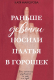

Рейтинг книг
Название и автор книги
Год

Раньше девочки носили платья в горошек
2020

Герои книг на приеме у психотерапевта
2021
Прислуга
2015
Властелин колец. Возвращение короля
2014
Цветы для Элджерона
1999